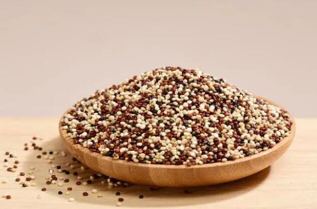
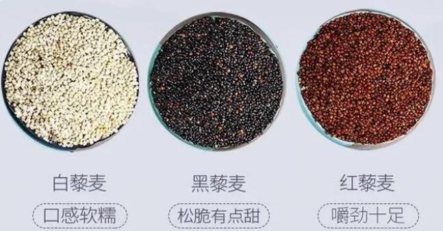

藜麦
藜麦的功效与作用包括促进减肥、抗炎、支持心血管健康、改善皮肤状况、控制糖尿病、治疗贫血和支持消化健康。其他好处包括改善新陈代谢，修复受损的组织和细胞，支持健康的头发生长，起到保湿的作用。
藜麦不仅仅是早餐的选择。营养学家喜欢这种超级食物，因为它有很多健康益处。将它融入你的日常生活，让它为你的整体福祉创造奇迹。本文还介绍了藜麦的营养价值、副作用、食用方法和其它相关知识。

藜麦是什么?
藜麦是一种开花植物的可食用种子，属于苋菜科。它是一种大约5000年前在秘鲁、智利和玻利维亚驯化的全谷物食品。现在，它是世界上消耗最多的食物之一。你可以在市场上找到红的，白的，黑的藜麦以及它的面粉和薄片。
藜麦膳食纤维含量高，卡路里含量低。你也可以找到足够的碳水化合物水平，以及不会伤害你的身体，如果适量食用。
藜麦，通常被描述为“超级食物”或“超级谷物”，已经在健康意识中流行起来，这是有充分理由的。藜麦富含蛋白质、纤维和各种维生素及矿物质。它也是无麸质的，推荐给无麸质饮食的人。
藜麦通常被用作大米的替代品，通常被认为是一种谷物，通常被称为谷物，但它实际上是一种种子。“淡黄色的豆荚是一种叫做藜麦的植物的种子，原产于秘鲁，与甜菜、甜菜和菠菜有亲缘关系，”妮可·斯皮里基斯在给NPR的一篇文章中写道。煮熟后，藜麦柔软蓬松，略带坚果味。根据谷物和豆类营养委员会的说法，它也可以制成面粉、薄片和各种食物，如意大利面和面包。
藜麦来自秘鲁、玻利维亚和智利。它生长在安第斯山脉，几千年来一直是当地居民的主食。根据威斯康星大学和明尼苏达大学的一篇大田作物文章，藜麦在印加语中的意思是“母粮”。
根据联合国粮农组织的数据，最近藜麦需求的激增已经将生产从南美推向了70多个国家。今天，大规模的藜麦作物在中国、北美、法国和印度生长。根据《植物科学前沿》2016年的评估，非洲和中东的藜麦产量正在回升。
下面跟爱来健康网一起来看一下藜麦的功效与作用：
藜麦的功效与作用
1 .促进减肥
藜麦含有大量可溶性和不溶性纤维。你也可以吃一碗新鲜制作的藜麦来减肥。藜麦中的纤维会抑制食欲，让你保持饱腹感，最终会减轻体重。它也是各种营养素的发电站，有助于增强你的全身力量，平衡你一整天的能量水平。
2 .抗炎
营养学家建议每天至少加入一份藜麦。它含有大量抗炎特性。此外，这种谷物有效地产生丁酸盐，这种丁酸盐被认为可以对抗人体内的各种炎症。你可以获得足够的维生素B来维持同型半胱氨酸水平，这是一种自然存在于你体内的炎性激素。
3 .心血管健康
藜麦可以成为降低胆固醇水平的天然来源，防止与动脉粥样硬化和冠心病相关的风险。除此之外，你可以获得所需量的油酸和α-亚麻酸，这是防止心脏成为心血管疾病的牺牲品所需要的。
4 .改善皮肤
你的皮肤需要的营养只能来自健康食品。营养学家建议定期食用藜麦可以改善皮肤状况。它含有酶、酪氨酸酶、烟酰胺等。这是对抗导致皮肤色素沉着的因素所必需的。
此外，当谈到治疗痤疮问题时，营养也是有益的。据说它们有助于淡化痤疮疤痕并防止其再次出现。作为一种抗炎药物，它可以有效缓解粉刺经常引起的红肿和刺激。
你可以从一份藜麦中收获大量维生素A。美容专家鼓励加入富含维生素A的食物来延缓衰老过程。定期摄入维生素会阻止皱纹、皱纹和老年斑。藜麦中发现的营养成分也可以促进皮肤弹性，有助于减少皮脂的产生。
5 .降低糖尿病风险
藜麦确实是糖尿病人的超级食物，因为它有最低血糖指数。它还富含多种氨基酸，有助于降低II型糖尿病的风险。此外，据说氨基酸还能调节血液中的糖，这也是藜麦对糖尿病患者有益的原因。然而，你应该避免在高血糖的情况下自我用药，并立即咨询你的医生。
6 .贫血的治疗
贫血不能掉以轻心，因为它会导致突然的疲劳和头晕。贫血背后的主要原因是缺铁。营养学家认为，在贫血治疗期间食用藜麦是有益的。一杯熟藜麦含有3毫克铁，估计相当于你每日所需量的15 %。定期摄入铁有助于有效治疗贫血。此外，它也是核黄素的重要来源，是产生血红蛋白所必需的，血红蛋白是你体内红细胞的一部分。它也有助于将氧气有效地输送到血液中。
7 .促进消化健康
营养学家说，你可以用富含膳食纤维的饮食来治疗各种消化问题。藜麦可以成为这方面的有效选择。当每天食用时，谷物中的膳食纤维开始刺激你的消化道。结果，你的小肠吸收营养，防止各种胃病。此外，膳食纤维对于预防大肠便秘也是必要的。
8 .改善新陈代谢
藜麦中的矿物质和维生素对提高新陈代谢率至关重要。当你的新陈代谢运转良好时，它会抑制食欲，也有助于减肥。
9 .修复受损的组织和细胞
你可以在藜麦中找到足够水平的赖氨酸。营养有助于缓解各种健康问题，使组织和细胞再生就是其中之一。它还富含氨基酸，可以抵御导致细胞损伤的因素。当你身体器官的细胞和组织受损时，可怕疾病的风险就会增加。这就是为什么营养学家建议食用藜麦来增强你全身的组织和细胞。
10 .毛囊
蛋白质是治疗各种健康问题所需的主要营养素之一。你可以从藜麦中收获蛋白质和其他成分来改善毛囊的状况。它提供了一种天然温和的涂层，在不伤害毛囊的情况下滋养毛囊。藜麦富含多种氨基酸，能增强你的头发。此外，基于植物的蛋白质被广泛提取，并被纳入到高质量的护发产品中。然而，营养学家建议食用富含植物蛋白的食物，以恢复干燥受损的头发。
11 .头皮保湿
你可能不相信，但是经常吃一碗热藜麦可以起到保湿的作用。它含有磷、铁、钙和锌等营养物质，能锁住头皮的水分，结果是你不太容易受到头皮屑、头皮干燥和发痒的影响。

一个人只吃藜麦能活下来吗?
一个人只吃藜麦能活下来吗?如果我只能选择一种我能吃的食物，我的意思是这将是一个非常可怕的情况，我会选择藜麦。
 上一篇
上一篇